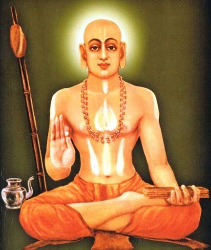

Who Was Madhvacharya?
Madhvacharya, also known by the names Purna Prajna and Ananda Tirtha, was a medieval Indian philosopher and Vedanta teacher who lived approximately in the thirteenth century CE. He is remembered as the founder of Dvaita Vedanta, the dualist school of Vedanta philosophy, and as one of the three most influential Vedanta commentators in the history of Indian thought, alongside Adi Shankaracharya and Ramanuja.
Madhvacharya is especially associated with insisting on the reality and permanence of difference in the universe. Where earlier Vedanta teachers had argued that individual souls are ultimately identical with the supreme reality, Madhvacharya taught that the soul, God, and the material world remain eternally distinct, each possessing its own real and irreducible nature that no philosophical insight can dissolve away.
Born in the coastal region of present-day Karnataka near the temple town of Udupi, Madhvacharya trained first under a teacher of Advaita Vedanta before breaking decisively from that tradition. He went on to compose an extensive body of Sanskrit commentaries on the central texts of Vedanta, traveled widely across the Indian subcontinent engaging rival philosophers in debate, and established a lasting institutional and devotional legacy centered on the worship of Krishna at Udupi.
Because much of what is known about Madhvacharya's life comes from devotional biographies written by his own followers, historians treat the more legendary episodes of his story with appropriate caution while still recognizing the depth and originality of his philosophical system. His lasting importance lies in offering one of classical India's most fully developed arguments for theistic dualism and devoted worship as the highest path to liberation.
Madhvacharya: Quick Facts
- Name — Madhvacharya (Purna Prajna, Ananda Tirtha)
- Period — Approximately 13th century CE
- From — Pajaka, near Udupi, in present-day Karnataka, India
- Philosophical period — Medieval Vedanta philosophy
- Associated with — Dvaita Vedanta and Tattvavada
- Known for — Doctrine of the five real differences and devotion to Vishnu
- Major works — The Sarvamula Granthas, including commentaries on the Brahma Sutras, Bhagavad Gita, and Upanishads
- Founded — The Udupi Krishna Matha and its eight subsidiary mathas
- Guru — Achyutapreksha, an Advaita ascetic
- Historical importance — Founder of one of the three classical schools of Vedanta philosophy
Madhvacharya and the Vedanta Debates of Medieval India

Madhvacharya lived during a period of intense philosophical activity within the Vedanta tradition, several centuries after Adi Shankaracharya had established Advaita Vedanta as a dominant interpretation of the Upanishads. By the time Madhvacharya began teaching, Vedanta philosophy had already become a contested field, with different schools offering competing readings of the same foundational texts, including the Upanishads, the Brahma Sutras, and the Bhagavad Gita.
The centuries before Madhvacharya had also seen the rise of Ramanuja's Vishishtadvaita, or qualified non-dualism, which attempted to combine devotional theism with elements of the older non-dual framework. This meant that when Madhvacharya arrived, Vedanta discourse already contained a spectrum of positions ranging from strict non-dualism to qualified non-dualism, and his own system pushed further toward an uncompromising dualism that had not yet been fully articulated within the Vedanta commentarial tradition.
This period of Indian philosophy was also shaped by the wider growth of devotional, or bhakti, movements across the subcontinent, which emphasized a personal and loving relationship between the worshipper and a supreme deity. Madhvacharya's philosophy drew directly on this devotional current, treating the worship of Vishnu not as a lower stage to be transcended by abstract knowledge but as central to the very structure of reality and to the soul's ultimate liberation.
In the tradition associated with Madhvacharya, philosophical inquiry therefore combined rigorous textual commentary with an unmistakably devotional orientation, treating the distinction between God and the individual soul not as a philosophical problem to be overcome but as a permanent and even joyful feature of reality that makes genuine loving relationship between the two possible.
Who Was Madhvacharya and What Did He Do?
According to the traditional biographies preserved by his followers, Madhvacharya was born in the small village of Pajaka, close to the temple town of Udupi on the western coast of India. These biographies, most notably the Madhva Vijaya composed by his follower Narayana Panditacharya, present his birth and early life as marked by signs of extraordinary spiritual destiny, including accounts of unusual strength and precocious learning.
As a young man, Madhvacharya took monastic initiation and studied under a teacher named Achyutapreksha, who instructed him in the Advaita Vedanta tradition associated with Shankaracharya. Traditional accounts describe Madhvacharya as an exceptionally sharp and persistent student who, even while training under an Advaita teacher, began to question the non-dualist interpretation of texts he was studying and to argue for readings that preserved real distinctions between the soul and the divine.
Madhvacharya is remembered as having traveled extensively across the Indian subcontinent during his life, engaging in philosophical debate with teachers of rival schools, including Advaita Vedantins, and reportedly journeying as far as the Himalayan region associated with Badarikashrama. Traditional biographies describe these travels as including a legendary meeting with the sage Vyasa, traditionally regarded as the author of the Brahma Sutras, though historians treat this and similar episodes as devotional narrative rather than verified history.
After establishing his own independent school of Vedanta interpretation, Madhvacharya settled at Udupi, where he established a matha, or monastic institution, centered on the worship of Krishna. He is credited with dividing the administration of this institution among eight subsidiary mathas, a structure that continued to shape religious and philosophical life in the region long after his death.
What can be established more securely than the miraculous episodes of his biography is Madhvacharya's enormous productivity as a commentator and systematic thinker, and the durable institutional and devotional legacy he left behind at Udupi, which remains an active center of Vaishnava worship and Dvaita scholarship to the present day.
What Did Madhvacharya Believe?
Madhvacharya's philosophy, often called Dvaita Vedanta or by its own preferred name, Tattvavada, meaning "the philosophy of reality" or "the doctrine of categories," rests on the claim that difference is a fundamental and permanent feature of existence rather than an illusion to be dissolved through philosophical insight.
At the center of this system is the relationship between the individual soul, or jiva, and the supreme God, whom Madhvacharya identified with Vishnu, also referred to as Hari or Narayana. Unlike the Advaita position that the individual soul is ultimately identical with the absolute reality of Brahman, Madhvacharya argued that the soul is eternally dependent upon God and eternally distinct from God, even in the state of liberation.
Madhvacharya's commentaries on the Upanishads, the Brahma Sutras, and the Bhagavad Gita consistently interpret passages that Advaita readers had taken to teach the identity of the soul and the absolute as instead teaching a relationship of total dependence, in which the individual soul reflects and relies upon God without ever merging into God's own being.
This philosophical position was not merely an abstract metaphysical claim for Madhvacharya but was closely tied to his understanding of devotion. If the soul remained eternally distinct from God, then a genuine and lasting relationship of love, service, and worship between the two became philosophically coherent in a way that Madhvacharya believed strict non-dualism could not fully support.
Scholars of Indian philosophy continue to debate the precise sources and originality of specific arguments within Madhvacharya's system, particularly regarding his engagement with earlier commentators and regional theological traditions, but his overall system is recognized as one of the most systematic and uncompromising defenses of theistic dualism produced within the Vedanta tradition.
What Is Dvaita Vedanta?
Dvaita Vedanta, literally "dualist Vedanta," is the school of Hindu philosophy founded by Madhvacharya that interprets the Vedanta scriptures as teaching real and eternal distinctions between the individual soul, the material world, and God, rather than an underlying identity between them.
Dvaita Vedanta became one of the three principal schools of classical Vedanta commentary, standing alongside the Advaita, or non-dualist, tradition associated with Shankaracharya and the Vishishtadvaita, or qualified non-dualist, tradition associated with Ramanuja. Where Advaita held that only Brahman is ultimately real and Vishishtadvaita held that the world and souls are real but exist as attributes of Brahman, Dvaita insisted that God, the soul, and matter are each independently real substances.
Within this framework, God is understood as fully independent and self-sufficient, while the soul and the material world, though real, are understood as eternally dependent upon God for their existence and continuation. Madhvacharya described this dependence using the Sanskrit term paratantra, contrasted with God's own status as svatantra, or independent reality.
It is therefore more accurate to describe Dvaita Vedanta as a form of theistic realism, in which difference itself is treated as a genuine feature of the cosmos, than to treat it as a simple denial of the unity underlying Vedanta thought as a whole; rather, the tradition finds unity in God's supremacy even while affirming the permanent reality of distinction.
What Is Panch Bheda, the Doctrine of the Five Real Differences?
Panch Bheda, or the doctrine of the five real differences, is one of the most distinctive and systematically developed features of Madhvacharya's philosophy. According to this teaching, reality is structured by exactly five fundamental and eternal distinctions, none of which can ever be dissolved, even through the highest spiritual realization.
The five differences are traditionally listed as follows: the difference between the individual soul and God, the difference between one individual soul and another individual soul, the difference between the soul and inert matter, the difference between God and matter, and the difference between one portion of matter and another portion of matter.
This doctrine directly opposes the Advaita claim that apparent differences in the world are ultimately the product of ignorance, or avidya, and disappear upon the realization of one's identity with Brahman. For Madhvacharya, difference is not a temporary appearance layered over an underlying unity but a basic and permanent structural feature of the universe itself.
By insisting on five distinct categories of difference rather than a single general claim that "things are different," Madhvacharya aimed to provide a comprehensive metaphysical map covering every possible relationship between souls, God, and matter, leaving no philosophical space for the kind of ultimate merging or identity proposed by rival Vedanta schools.
Later Dvaita commentators expanded on this doctrine at considerable length, using it as the foundation for detailed arguments in logic, epistemology, and scriptural interpretation, making Panch Bheda one of the most closely studied and debated elements of Madhvacharya's philosophical legacy.
Madhvacharya, Bhakti, and Devotion to Vishnu
Devotion, or bhakti, occupies a central place in Madhvacharya's philosophy, standing alongside knowledge as a necessary path toward liberation rather than a lesser practice to be eventually set aside once true understanding is attained.
Madhvacharya identified the supreme God with Vishnu , understood as the independent and complete reality upon which everything else depends. In his system, correct philosophical knowledge of the real distinction between the soul and God is not opposed to devotion but instead deepens it, since recognizing one's total dependence on God is understood to intensify rather than diminish the possibility of loving relationship and service.
This emphasis on devotion connected Madhvacharya's philosophical system with the broader currents of bhakti spirituality that were spreading across medieval India, even as his own commentaries remained highly technical works of Sanskrit scholarship aimed at scholars and monastic students rather than popular audiences.
Madhvacharya also taught a graded hierarchy among souls, often called taratamya, according to which different souls possess differing inherent capacities for knowledge, devotion, and proximity to God, a further application of his broader commitment to real and lasting difference throughout the created order.
Through this combination of rigorous dualist metaphysics and heartfelt devotional practice, Madhvacharya offered a philosophical foundation for a tradition of worship that continues at the Udupi Krishna Matha and among Madhva-affiliated communities across South India today.
The Sarvamula Granthas: Madhvacharya's Major Works
Madhvacharya's philosophical system survives primarily through a collected body of thirty-seven Sanskrit works traditionally referred to as the Sarvamula Granthas, meaning "the fundamental works" or "the root texts" of the Dvaita tradition.
Among the most important of these works are his commentaries on the ten principal Upanishads, his commentary and independent treatise on the Brahma Sutras, and his commentary on the Bhagavad Gita, each of which systematically reinterprets the foundational Vedanta scriptures along dualist lines.
Madhvacharya also composed the Mahabharata Tatparya Nirnaya and the Bhagavata Tatparya Nirnaya, lengthy works that offer a theological interpretation of the great epic Mahabharata and the devotional Bhagavata Purana, treating both texts as consistent expressions of his dualist and devotional worldview.
These works are notable for their concise, often highly compressed Sanskrit style, which later Dvaita commentators, most prominently Jayatirtha and Vyasatirtha, worked to explain and defend at great length against objections from rival Vedanta schools.
The survival and continuous study of the Sarvamula Granthas within an unbroken monastic and scholarly tradition centered at Udupi has allowed Dvaita Vedanta to remain an active and rigorously maintained school of Indian philosophy from Madhvacharya's own time through to the present day.
Madhvacharya's Critique of Advaita and Adi Shankaracharya
Much of Madhvacharya's philosophical writing is explicitly framed as a response to and critique of Advaita Vedanta, the non-dualist school associated with Adi Shankaracharya, several centuries before him.
Where Shankaracharya taught that the individual self is ultimately identical with Brahman and that the experience of difference results from ignorance, Madhvacharya argued that this position could not be consistently supported by a careful reading of the Upanishads and that it undermined the coherence of devotional worship, moral responsibility, and the very concept of a personal God.
Madhvacharya also directly challenged the Advaita account of maya, or the doctrine that the empirical world is a kind of superimposed illusion obscuring the single underlying reality of Brahman. For Madhvacharya, the material world is real, though dependent on God, and its differences from other categories of existence are not products of ignorance but part of the genuine structure of creation.
This sustained philosophical opposition between Dvaita and Advaita produced centuries of detailed argument and counter-argument between the two traditions, covering questions of scriptural interpretation, logic, and the nature of liberation, and it remains one of the most extensively documented philosophical debates in the history of Indian thought.
Madhvacharya Compared with Ramanuja's Vishishtadvaita
Madhvacharya is often discussed alongside Ramanuja, the earlier Vedanta philosopher who founded Vishishtadvaita, or qualified non-dualism, since both thinkers rejected strict Advaita in favor of systems that preserved a personal, devotable God.
Ramanuja's system held that the individual soul and the material world are real but exist as inseparable attributes, or modes, of the single reality of Brahman, somewhat like the relationship between a body and the self that animates it. Madhvacharya went considerably further, insisting that the soul and God are not merely distinguishable aspects of one underlying substance but entirely separate substances in their own right.
Both philosophers shared a strong commitment to bhakti as central to religious life and both identified the supreme God with a form of Vishnu, yet their differing accounts of the soul's ultimate relationship to God produced distinct communities of interpretation and continuing philosophical debate between Vishishtadvaita and Dvaita commentators.
The distinction matters because grouping all devotional Vedanta philosophy together can obscure real differences in emphasis and argument. Historians of Indian philosophy generally treat Madhvacharya's Dvaita as the most thoroughly dualist of the three classical Vedanta schools, standing at the opposite end of the spectrum from Shankaracharya's strict non-dualism, with Ramanuja's qualified non-dualism occupying an intermediate position.
Madhvacharya's Influence on the Haridasa Bhakti Movement
Madhvacharya's philosophy did not remain confined to Sanskrit scholastic circles but became the theological foundation for the later Haridasa movement, a devotional and musical tradition that flourished in the Kannada-speaking regions of South India in the centuries following his death.
Poet-saints associated with this movement, most notably Purandara Dasa and Kanaka Dasa, composed devotional songs in the Kannada language that expressed Dvaita theological ideas, including the dependence of the soul on God and the centrality of devotion to Vishnu, in accessible poetic and musical form.
Through the Haridasa tradition, Madhvacharya's philosophical system reached far beyond the monastic and scholarly institutions he had founded, shaping popular religious practice, regional language literature, and the development of Carnatic classical music, whose theoretical foundations owe a considerable debt to Haridasa compositions.
This connection between rigorous Sanskrit metaphysics and accessible vernacular devotional song illustrates how Madhvacharya's dualist philosophy proved adaptable across different registers of religious and cultural life, sustaining its influence well beyond the immediate context of scholastic Vedanta debate.
Legends and Traditional Accounts of Madhvacharya
Traditional hagiographical accounts of Madhvacharya's life, composed by devoted followers after his lifetime, include a number of episodes that go beyond what historians can verify through independent evidence, presenting him as an extraordinary and even semi-divine figure.
Within the Dvaita tradition itself, Madhvacharya is regarded as the third avatar of the wind god Vayu, following the earlier incarnations of Hanuman in the Ramayana and Bhima in the Mahabharata, each understood as a devoted servant of Vishnu appearing across different cosmic ages to support righteousness.
Devotional biographies also describe miraculous events, including accounts of Madhvacharya multiplying food to feed large numbers of people, calming storms at sea, and demonstrating superhuman strength and endurance during his travels and debates with rival philosophers.
Historians of Indian philosophy generally treat these accounts as important evidence for how Madhvacharya's community understood and venerated him, rather than as verified historical fact, distinguishing the devotional portrait preserved in tradition from the philosophical content of his surviving Sanskrit writings, which remains the primary basis for scholarly analysis of his actual arguments.
Madhvacharya: Main Philosophical Ideas
Because Madhvacharya's system is expressed through dense scholastic Sanskrit commentary, his central philosophical ideas are often summarized under a small number of key headings drawn from later Dvaita tradition.
Real and Eternal Difference
Madhvacharya taught that difference is not an illusion but a basic and permanent feature of reality, expressed most fully through his doctrine of the five real differences, or Panch Bheda.
Total Dependence on God
The individual soul and the material world are understood as eternally dependent upon God, described through the contrast between dependent reality, or paratantra, and God's own independent reality, or svatantra.
Devotion as a Path to Liberation
Bhakti, or loving devotion to Vishnu, occupies a central place alongside knowledge in Madhvacharya's account of the path toward liberation, rather than being treated as a preliminary stage to be surpassed.
Graded Hierarchy of Souls
Madhvacharya's doctrine of taratamya holds that individual souls possess differing inherent capacities and stand in differing degrees of closeness to God, even after attaining liberation.
Scriptural Commentary as Philosophical Method
Madhvacharya expressed his philosophy primarily through detailed commentary on the Upanishads, the Brahma Sutras, and the Bhagavad Gita, treating careful textual interpretation as inseparable from systematic philosophical argument.
What Do We Actually Know About Madhvacharya?
Madhvacharya is a useful example of the broader challenge facing historians who study medieval Indian philosophers whose lives are known mainly through devotional biography rather than independent historical documentation.
Relatively Well-Attested
- Madhvacharya was associated with the Udupi region of present-day Karnataka.
- He lived approximately during the thirteenth century CE.
- He founded Dvaita Vedanta, the dualist school of Vedanta philosophy.
- He composed the thirty-seven works known collectively as the Sarvamula Granthas.
- He established the Udupi Krishna Matha and its associated eight subsidiary mathas.
Traditionally Reported
- His early training under the Advaita teacher Achyutapreksha.
- His extensive travels across the Indian subcontinent, including to the Himalayan region.
- His identification within the Dvaita tradition as an avatar of the wind god Vayu.
- Various miracle stories recorded in later hagiographical accounts such as the Madhva Vijaya.
Uncertain or Disputed
- The precise dates of his birth and death.
- The exact historical details of his debates with rival Vedanta teachers.
- The extent to which specific arguments in his commentaries drew on earlier, now-lost regional traditions.
- Whether every episode recorded in devotional biographies accurately reflects historical events.
Why Is Madhvacharya Important in Indian Philosophy?
Madhvacharya is important because he developed one of the most systematically argued forms of theistic dualism within the Vedanta tradition, offering an alternative to both strict non-dualism and qualified non-dualism that continues to be studied and practiced today.
His philosophical legacy raises a fundamental question that remains central to the philosophy of religion: If ultimate reality contains a supreme God, must every other being ultimately dissolve into that God, or can real, permanent difference coexist with a coherent account of devotion and dependence?
This question has continued to shape debates within Vedanta philosophy and comparative theology, as later thinkers examined how competing views of unity and difference affect ethics, worship, and the meaning of liberation.
Madhvacharya's importance therefore does not depend on accepting every legendary episode associated with his biography. His historical significance comes from his place as the founder of a rigorously argued philosophical school that continues to shape religious practice, scholarship, and devotional culture across South India.
Madhvacharya Explained Simply
Madhvacharya was a medieval Indian philosopher who founded Dvaita Vedanta, the dualist school of Vedanta philosophy that treats the soul, God, and the material world as eternally real and eternally distinct from one another.
Instead of teaching that the individual soul is ultimately identical with the divine, Madhvacharya's philosophy emphasizes the soul's permanent and loving dependence on God, whom he identified with Vishnu, treating this dependence as the very foundation of genuine devotion rather than an obstacle to be overcome.
His doctrine of Panch Bheda, or the five real differences, remains one of the most distinctive contributions of Indian philosophy to the wider study of metaphysics and the relationship between unity and diversity in reality.
- Philosopher: Madhvacharya
- Period: 13th century CE
- Tradition: Dvaita Vedanta (Tattvavada)
- Major doctrine: Panch Bheda, the five real differences
- Central concern: The real and eternal relationship between the soul and God
- Associated practice: Bhakti, or devotion to Vishnu
- Major institution: The Udupi Krishna Matha
- Later influence: The Haridasa devotional movement
A Principle Central to Madhvacharya's Philosophy
“Difference alone is real.”
Frequently Asked Questions About Madhvacharya
Who was Madhvacharya?
Madhvacharya was a thirteenth-century Indian philosopher and Vedanta teacher who founded Dvaita Vedanta, the dualist school of Vedanta philosophy centered on the eternal distinction between the individual soul and God.
What is Madhvacharya famous for?
Madhvacharya is famous for founding Dvaita Vedanta, developing the doctrine of Panch Bheda, or the five real differences, and establishing the Udupi Krishna Matha as a center of Vaishnava worship and Dvaita scholarship.
What did Madhvacharya believe?
Madhvacharya believed that the individual soul, God, and the material world are eternally and really distinct from one another, and that the soul remains permanently dependent upon God, whom he identified with Vishnu, even in the state of liberation.
What is Dvaita Vedanta?
Dvaita Vedanta is the dualist school of Vedanta philosophy founded by Madhvacharya, which teaches that the individual soul, God, and the material world are eternally and really distinct from one another, rather than ultimately identical.
What is Panch Bheda in Madhvacharya's philosophy?
Panch Bheda, or the five real differences, is Madhvacharya's doctrine that reality contains five eternal and irreducible distinctions: between the soul and God, between one soul and another, between the soul and matter, between God and matter, and between one part of matter and another.
How is Madhvacharya different from Adi Shankaracharya?
Shankaracharya taught Advaita Vedanta, the view that the individual soul is ultimately identical with Brahman, while Madhvacharya taught Dvaita Vedanta, the view that the soul and God remain eternally distinct even in liberation.
How is Madhvacharya different from Ramanuja?
Ramanuja taught Vishishtadvaita, or qualified non-dualism, in which the soul and world exist as attributes of a single Brahman, while Madhvacharya taught a stricter dualism in which the soul, God, and matter are entirely separate substances.
What are the Sarvamula Granthas?
The Sarvamula Granthas are the thirty-seven Sanskrit works composed by Madhvacharya, including commentaries on the Upanishads, the Brahma Sutras, and the Bhagavad Gita, that form the foundational textual basis of Dvaita Vedanta.
What is the connection between Madhvacharya and the Haridasa movement?
The Haridasa movement was a later devotional and musical tradition in Karnataka whose poet-saints, including Purandara Dasa and Kanaka Dasa, expressed Madhvacharya's Dvaita theology through devotional songs composed in the Kannada language.
Why is Madhvacharya important today?
Madhvacharya remains important because his philosophy continues to shape active religious practice, particularly at the Udupi Krishna Matha, and because his arguments for theistic dualism continue to inform comparative discussions in the philosophy of religion.
Related Indian Philosophers
Madhvacharya belongs to the wider tradition of Vedanta philosophy. Explore philosophers who developed different approaches to the nature of the soul, God, and ultimate reality.
Philosophy Branches Connected to Madhvacharya
Madhvacharya's philosophical legacy is particularly important for metaphysics, where philosophers investigate the nature of reality and difference, and for the philosophy of religion, which examines the relationship between the divine and the individual soul.
Why Madhvacharya Still Matters
Madhvacharya did not leave behind a single unified treatise in the manner of some later systematic philosophers, but instead expressed his ideas through an extensive body of Sanskrit commentary that continues to be studied within an unbroken scholarly and monastic tradition centered at Udupi.
Yet the questions associated with Madhvacharya remain fundamental to philosophy and theology alike: Is ultimate reality fundamentally one, or does it contain genuine and lasting difference? Can devotion and dependence coexist with the soul's own reality and dignity? What kind of relationship between the human and the divine does liberation actually require?
The Dvaita tradition he founded transformed these questions into a sustained and rigorously argued philosophical system. Its emphasis on real difference, total dependence on God, and devoted worship made Madhvacharya one of the most distinctive and enduring voices in the history of Vedanta philosophy.
Explore Great Philosophers